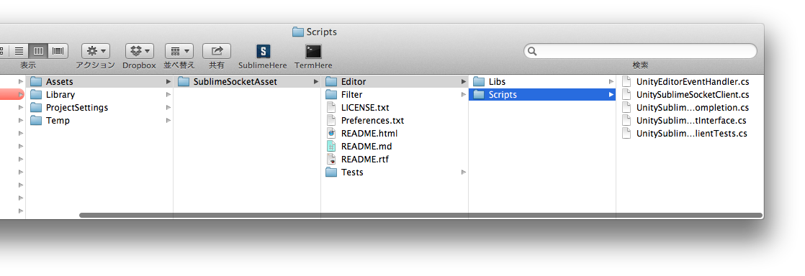
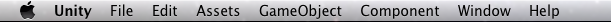
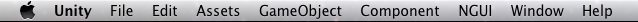
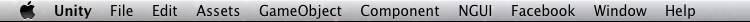

オレオレAssetをAssetStoreに出して死なないために気をつけること
概要
みんなだいすき Unity Advent Calendar 2013 案件。
前日 13日は、
shinriyo@github さんの
せっかくだから俺は13日の金曜日を選ぶぜ！ランキング機能の簡易実装したけー。
でした。
で、今日は俺 @toru_inoueです。
カレンダー上だと、
Sublime TextでのUnity作業の効率化について
と、言ったな。
あれは嘘だ。
Unity使いなら誰もが世話になっているであろう AssetStoreに、
オレオレAssetを登録するときのAssetのおすすめ構成とか、やっとけポイントについて書く。
登録に関しては以前書いてるんだけど、今回は
どういう構成のAssetを作ると、使い手側としてまだなんぼかマシか
どうすれば審査をするUnity側にポカーンとされないか
みたいな話にするつもり。
ソースはSSA。
SublimeSocketAsset
http://u3d.as/content/sassembla/sublime-socket-asset/4SP
これからAsset売ってやるぜー！！ みたいな誰かの参考になれば。
1.Asset名のフォルダをきっちり切ろう！
登録するAsset名で プロジェクト/Assets/ 以下にフォルダを切っておくと凄く良い。
こんな感じ。

できるだけ全てのものをAsset名フォルダに納める。
できるだけ Assets/Standard Assets フォルダとか Assets/Plugins とかを汚さないようにすると良いと思う。
ログ出力したり、辞書ファイル作るとか、Assetとして動作する上でしょうがなく汚すとしても、
自作フォルダ内、ようは自分の作ったAsset名フォルダ内に絞れるようにしよう。
フォルダ名で判断してビルドフェーズが異なってくる系のものも、大概は自前のAsset名フォルダ下にネストしてもなんとかなる。
参考：http://wiki.unity3d.com/index.php/Special_Folder_Names_in_your_Assets_Folder
☆Standard ~ 系とかだけは、どうしようも無い気がする。Assets直下でないと作用しない。
ので、このへんは「つかわねーように心がける、設計を変える」とかが最適解な気がする。
未来の変更の可能性を殺してはならない。
このへんのはみ出し具合が最悪だと、
Plugins にいろんなものが置いてあるわ、
なんだかわからないけど外部に謎の名前でフォルダ吐いたりするわ、
勝手にファイルが書き変わったりするわ、
そのAssetのUpdateがあったときや、そのAssetを使うのをやめたいときに、
「あれ、どのフォルダがAsset由来のやつなんだ、、！？ 消していいのかコレ、、？！」
「なんかファイルがいつの間にか上書きされてるんだがァ、、！？」
みたいになり、ガチ欝感全開になる。
で、憎まれこそすれ、ユーザー = 開発者が幸せになれるわけない。
当然、開発者が幸せになれなければ、
Assetの開発者にも幸せは訪れない。
AssetStoreに限らず、この世にはそういうこと考えずに、
ガンガンPluginフォルダを汚すようなSDK配ってるゲームプラットフォームとか、SNSとかが、数多ある。
もーね、殺意駆動が全力全開だよィ☆
メンテするのは自分じゃなくて、自分を含んだ誰か、なので、憎しみを生まないように気をつけよう。
2.メニューバーは共有資源なので大事にしよう
メニューバーに自前のAsset用の項目をのっけてて、Unityの審査に落ちた事がある。
~ある日~
Unity 「Your Asset has been declined! ウェヒッww」
俺 「D、、、Decline、、だと、、！？ なんでなんだ Unityィィィーッ！！」
Unity 「Please nest your extension under an already existing MenuItem rather than creating your own!」
俺 「はい。」
見てみるとまあ、、はい、、
何も無い状態

+ NGUI

+Facebo、、、

―――のびるッ！！(CV. 子安武人)
そしてバーの幅は有限なので、右端のものが見えなくなっ、、なっ、、、
あれだよ、Xamarinとかでよくあるやつだ。

ぶっちゃけ、ショートカットを決める + Assets とか Window に突っ込む、というロジックで大概のものは良い気がする。
GUIでのアクセスが多量だったり、表示し続ける必要があるなら、それ用のPaneとかPanelを持つ事を考えた方が良いだろう。
というわけで、
オレオレMenu項目、格好悪い。 なるべく使わないで済む方向で考えよう。
3.READMEをしっかり付けよう！
直感的にAssetのすべてがすぐ使えるならまだしも、
いろいろなAssetが存在してるので、その使用法や常識など、
コモンセンスが全く無いと思ってもらって良い。
・どうやってインストールすればいいのか
・何をすると何がどうなるAssetなのか
・どういう風に動いているのが正常なのか
などを、Assetの使用を通じて説明する必要がある。
Assetを紹介するサイトっていうかAssetStoreで見せておくのも尤もなんだけど、
ユーザーがUnity上で使うときにどう迷わないようにできるか、というのが本懐なので、
READMEを用意するとか紹介ムービーへのリンク用意するとかAPIリストを用意するとかしよう。
添付の資料の更新手段がUpdateしかなく、再申請に時間がかかることを考えると、
・リンクが書いてあるファイル
・リンク先はどっかWebSite
みたいな構成にするのが一番楽だと思う。
SSAだと、インストール法とかに最新のSublime Text とかSublimeSocketプラグインが関わってくるので、
そのへんをWebにぶん投げるようにしている。
4.連絡がつくようにしよう！
当然っちゃ当然なんだけど、サポート用に連絡がつくアドレスとかTwitterアカウントを、
目につくところに書いておく必要がある。
SSAでは、README内にTwitterアカウントとメールを明記しているけど、
公開してからいままで10数件くらいのお問い合わせがメールで来た。
機能の追加要望とかもメールでくるのがほとんど。
使ってくれる、要望をくれるひとがチラチラいるのはうれしい事です。はい。
バグ報告がメインの用途だけどな。
5.フォーラムに乗り出そう！
Unity AssetStore フォーラムみたいなところがあって、
いろんなAssetが「俺、これの作者なんだけど聞きたい事ある？」みたいな感じで書き込んでいるので、
真似れば良いんだと思う。特に損は無さそう。
http://forum.unity3d.com/threads/217116-SublimeSocketAsset?p=1451794#post1451794
っていうか自分もさっき作った。
6.どのくらい儲かるのか
グへへへへへへへへへ、、、(ゲス顔)
お察しください。
自分は、少なくとも月の食費は賄えている。
ということで、
AssetStoreにAssetを登録してみて、あーこれ必要だなーって思ったことなどを纏めてみた。
どうすれば売れるか、みたいなのはもっとマジメな人がきっと話してくれると思う。
おまけ
Unityさん、なんかHaxeのターゲットになったそうで、
Haxe書く→Unity用の何か(C#)にコンパイルされる→Unityで動かせる
みたいな時代がくるらしいようなアトモスフィアっぽい。
で、SublimeSocketAssetをHaxeからの連携込みでやれるようにしてみると楽しいのかなあと思ったり。
すこしだけお金のにおい。
個人的には、
Haxe -> C# -> Unity -> PNaCLとか、
TypeScript -> CLI -> PNaClとかのカオスきわまりない流れに身をぶん投げようとしている友人がいるので、
エディタ周りでちょっと参加してその行く末を見守ろうかなーと思っている。
あわよくば TypeScript -> CLI に対してエディタ拡張とかで絡みたい。
明日は、nobkz さんです。